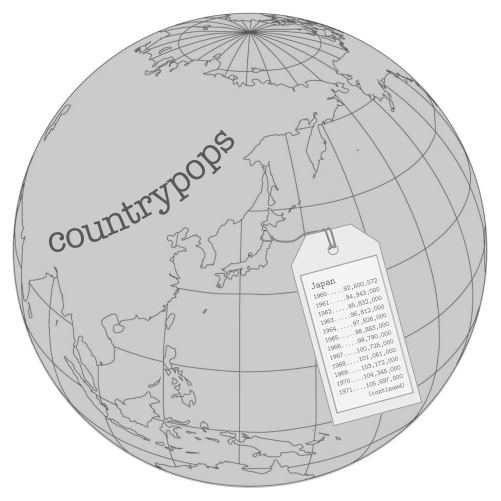
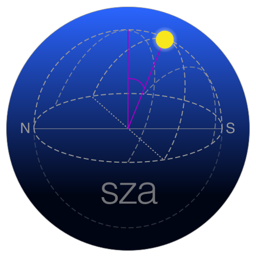

The gt package comes with six built-in datasets for experimenting with the gt API: countrypops, sza, gtcars, sp500, pizzaplace, and exibble. While each dataset has different subject matter, all of them will be used to develop gt examples with consistent syntax.

Each dataset is stored as a tibble, ranging from very small (like exibble, an example tibble of 8 rows) to quite large in size (e.g., at nearly 50,000 rows: pizzaplace). Larger datasets are typically impractical as gt output tables but they provide opportunities for demonstrating preprocessing using tidyverse tools like dplyr and tidyr (upstream of gt’s gt() entry point).
In many gt workflows, there will often be prep work like this where the creation of the input table and any salient information (e.g., metadata for footnotes) will be done alongside the preparation of the display table.
In the next few examples, we’ll show how tables can be created with each of these datasets. Each example will be preceded with a set of requirements that serve as a design brief. This planning stage can be very useful in your own work for the purpose of organization. The hope is that this collection of simple examples will inspire the creation of much more interesting display tables with gt.
countrypops
This dataset provides the total populations of 215 countries on a yearly basis, from 1960 to 2017. The source data comes from the World Bank, where it has been cleaned and tidied up for inclusion into this package. Each row contains a population value for a country in a given year, where NA values for population indicate that the country did not exist in that particular year.
The countrypops dataset is a tibble with 12,470 rows and 5 variables. Here are explanations for each of the variables:
| Column | Type | Description |
|---|---|---|
| country_name | chr | Name of the country |
| country_code_2 | chr | The 2-letter ISO 3166-1 country code |
| country_code_3 | chr | The 3-letter ISO 3166-1 country code |
| year | int | The year for the population estimate |
| population | int | The population estimate, midway through the year |
A countrypops Example
The table that we’ll create from countrypops will meet these requirements:
- use countries from Oceania
- countries in different regions of Oceania will be grouped together
- provide populations for the 1995, 2005, and 2015 years only; they should appear as separate columns with a spanner group column stating that these columns refer to population values
- format population figures to contain commas
- provide a descriptive title
# Get vectors of 2-letter country codes for
# each region of Oceania
Australasia <- c("AU", "NZ")
Melanesia <- c("NC", "PG", "SB", "VU")
Micronesia <- c("FM", "GU", "KI", "MH", "MP", "NR", "PW")
Polynesia <- c("PF", "WS", "TO", "TV")
# Create a gt table based on a preprocessed `countrypops`
countrypops %>%
dplyr::filter(country_code_2 %in% c(
Australasia, Melanesia, Micronesia, Polynesia)
) %>%
dplyr::filter(year %in% c(1995, 2005, 2015)) %>%
dplyr::mutate(region = case_when(
country_code_2 %in% Australasia ~ "Australasia",
country_code_2 %in% Melanesia ~ "Melanesia",
country_code_2 %in% Micronesia ~ "Micronesia",
country_code_2 %in% Polynesia ~ "Polynesia",
)) %>%
tidyr::spread(key = year, value = population) %>%
dplyr::arrange(region, desc(`2015`)) %>%
dplyr::select(-starts_with("country_code")) %>%
gt(
rowname_col = "country_name",
groupname_col = "region"
) %>%
tab_header(title = "Populations of Oceania's Countries in 1995, 2005, and 2015") %>%
tab_spanner(
label = "Total Population",
columns = c("1995", "2005", "2015")
) %>%
fmt_number(
columns = TRUE,
decimals = 0,
use_seps = TRUE
)| Populations of Oceania's Countries in 1995, 2005, and 2015 | |||
|---|---|---|---|
| Total Population | |||
| 1995 | 2005 | 2015 | |
| Australasia | |||
| Australia | 18,072,000 | 20,394,800 | 23,850,784 |
| New Zealand | 3,673,400 | 4,133,900 | 4,595,700 |
| Melanesia | |||
| Papua New Guinea | 4,894,276 | 6,314,709 | 7,919,825 |
| Solomon Islands | 359,225 | 469,885 | 587,482 |
| New Caledonia | 193,816 | 232,250 | 272,400 |
| Vanuatu | 168,235 | 209,370 | 264,603 |
| Micronesia | |||
| Guam | 145,561 | 158,402 | 161,797 |
| Kiribati | 77,730 | 92,325 | 112,407 |
| Micronesia (Federated States) | 107,556 | 106,196 | 104,433 |
| Northern Mariana Islands | 56,278 | 63,744 | 54,816 |
| Marshall Islands | 51,015 | 52,055 | 52,994 |
| Palau | 17,253 | 19,906 | 21,288 |
| Nauru | 9,969 | 10,114 | 12,475 |
| Polynesia | |||
| French Polynesia | 215,196 | 254,886 | 277,690 |
| Samoa | 170,157 | 179,929 | 193,759 |
| Tonga | 96,076 | 101,041 | 106,364 |
| Tuvalu | 9,230 | 10,027 | 11,001 |
sza
The solar zenith angle is one measure of the solar position. It can be thought of as ‘height’ of the sun in relation to an observer. A solar zenith angle of 0° indicates that the sun is directly overhead (a different solar angle, the solar altitude angle, is 90° in this instance). With the sun at the horizontal (e.g., during sunrise/sunset) we observe the solar zenith angle to be around 90° (there is the matter of atmospheric refraction). During nighttime, solar zenith angles in the range of 90–180 are possible (again, depending on the location of the observer).
The sza dataset has calculated values for the solar zenith angles every 30 minutes from 04:00 to 12:00 (true solar time). Temporally, these calculations are for the 1st of every month of the year. Spatially, the observer is located at somewhere along latitudes 20°N, 30°N, 40°N, and 50°N (because we are using true solar time, the longitude is unimportant). This is quite an extensive topic, and more information can be found by using ?sza in the R console or by visiting this page.
The sza dataset is a tibble with 816 rows and 4 variables. Here are explanations for each of the variables:
| Column | Type | Description |
|---|---|---|
| latitude | dbl | The latitude in decimal degrees for the observations |
| month | fct | The measurement month; all calculations where conducted for the first day of each month |
| tst | chr | The true solar time at the given latitude and date (first of month) for which the solar zenith angle is calculated |
| sza | dbl | The solar zenith angle in degrees, where NAs indicate that sunrise hadn't yet occurred by the tst value |
An sza Example
The table that we’ll create from sza will meet these requirements:
- filter the data to just use the 20°N data and remove the
latitudecolumn -
NAvalues fromszacolumn are to be removed - reshape the table so that columns of
tst(true solar time) contain angles in degrees (from theszacolumn) - the gt output table will have the
months as row labels in the stub - missing values will be replaced with an empty string (so that those cells are blank)
- a stubhead label will state what’s inside the stubs (months, at 20°N)
- the table will have a heading decorated with the HTML Black Sun with Rays (
☀) symbol - to fit the large amount of data in a small area, use some table options to reduce text size and row padding
# Create a gt table based on a preprocessed `sza`
sza %>%
dplyr::filter(latitude == 20) %>%
dplyr::select(-latitude) %>%
dplyr::filter(!is.na(sza)) %>%
tidyr::spread(key = "tst", value = sza) %>%
gt(rowname_col = "month") %>%
fmt_missing(
columns = TRUE,
missing_text = ""
) %>%
tab_stubhead_label(label = html("month<br>(20°N)")) %>%
tab_header(title = html("☀ Solar Zenith Angles ☀")) %>%
tab_options(
column_labels.font.size = "smaller",
table.font.size = "smaller",
row.padding = px(3)
)| ☀ Solar Zenith Angles ☀ | ||||||||||||||
|---|---|---|---|---|---|---|---|---|---|---|---|---|---|---|
| month (20°N) |
0530 | 0600 | 0630 | 0700 | 0730 | 0800 | 0830 | 0900 | 0930 | 1000 | 1030 | 1100 | 1130 | 1200 |
| jan | 84.9 | 78.7 | 72.7 | 66.1 | 61.5 | 56.5 | 52.1 | 48.3 | 45.5 | 43.6 | 43 | |||
| feb | 88.9 | 82.5 | 75.8 | 69.6 | 63.3 | 57.7 | 52.2 | 47.4 | 43.1 | 40 | 37.8 | 37.2 | ||
| mar | 85.7 | 78.8 | 72 | 65.2 | 58.6 | 52.3 | 46.2 | 40.5 | 35.5 | 31.4 | 28.6 | 27.7 | ||
| apr | 88.5 | 81.5 | 74.4 | 67.4 | 60.3 | 53.4 | 46.5 | 39.7 | 33.2 | 26.9 | 21.3 | 17.2 | 15.5 | |
| may | 85 | 78.2 | 71.2 | 64.3 | 57.2 | 50.2 | 43.2 | 36.1 | 29.1 | 26.1 | 15.2 | 8.8 | 5 | |
| jun | 89.2 | 82.7 | 76 | 69.3 | 62.5 | 55.7 | 48.8 | 41.9 | 35 | 28.1 | 21.1 | 14.2 | 7.3 | 2 |
| jul | 88.8 | 82.3 | 75.7 | 69.1 | 62.3 | 55.5 | 48.7 | 41.8 | 35 | 28.1 | 21.2 | 14.3 | 7.7 | 3.1 |
| aug | 83.8 | 77.1 | 70.2 | 63.3 | 56.4 | 49.4 | 42.4 | 35.4 | 28.3 | 21.3 | 14.3 | 7.3 | 1.9 | |
| sep | 87.2 | 80.2 | 73.2 | 66.1 | 59.1 | 52.1 | 45.1 | 38.1 | 31.3 | 24.7 | 18.6 | 13.7 | 11.6 | |
| oct | 84.1 | 77.1 | 70.2 | 63.3 | 56.5 | 49.9 | 43.5 | 37.5 | 32 | 27.4 | 24.3 | 23.1 | ||
| nov | 87.8 | 81.3 | 74.5 | 68.3 | 61.8 | 56 | 50.2 | 45.3 | 40.7 | 37.4 | 35.1 | 34.4 | ||
| dec | 84.3 | 78 | 71.8 | 66.1 | 60.5 | 55.6 | 50.9 | 47.2 | 44.2 | 42.4 | 41.8 | |||
gtcars
The gtcars dataset takes off where mtcars left off. It contains 47 cars from the 2014-2017 model years. Many of the gtcars vehicles are grand tourers. Indeed, many of these provide the ability to cross an entire continent at speed and in comfort yet, when it’s called for, they will allow you to experience driving thrills. The chassis and suspension are in most cases top-notch and supply superb handling and roadholding on all routes one would conceivably encounter during the grand touring experience. The two plus two (2 + 2) seating configuration is smartly designed to deliver comfort for a driver and passenger, adequate space for luggage, and have room to spare.
The gtcars dataset is a tibble with 47 rows and 15 variables. Here are explanations for each of the variables:
| Column | Type | Description |
|---|---|---|
| mfr | chr | The name of the car manufacturer |
| model | chr | The car's model name |
| year | int | The car's model year |
| trim | chr | A short description of the car model's trim |
| bdy_style | chr | An identifier of the car's body style, which is either coupe, convertible, sedan, or hatchback |
| hp, hp_rpm | int | The car's horsepower and the associated RPM level |
| trq, trq_rpm | int | The car's torque and the associated RPM level |
| mpg_c, mpg_h | int | The miles per gallon fuel efficiency rating for city and highway driving |
| drivetrain | chr | The car's drivetrain which, for this dataset is either rwd (Rear Wheel Drive) or awd (All Wheel Drive) |
| trsmn | chr | The codified transmission type, where the number part is the number of gears; the car could have automatic transmission (a), manual transmission (m), an option to switch between both types (am), or, direct drive (dd) |
| ctry_origin | chr | The country name for where the vehicle manufacturer is headquartered |
A gtcars Example
The table that we’ll create from gtcars will meet these requirements:
- only include German cars
- limit the dataset to the top two most expensive offerings from each German manufacturer
- the information included will be the manufacturer (
mfr), the car model (model), thedrivetrain, and the price (msrp) - add a table title
- combine the car make and model into a single column
- capitalize the
drivetraintext - format the prices as USD currency with commas and no decimal places shown
- relabel the column headings to provide nicer labels
- add two footnotes that explain the
drivetrainabbreviations and that state the currency of themsrpprices; ensure that the footnote glyphs are lowercase letters
# Create a gt table based on a preprocessed `gtcars`
gtcars %>%
dplyr::filter(ctry_origin == "Germany") %>%
dplyr::group_by(mfr) %>%
dplyr::top_n(2, msrp) %>%
dplyr::ungroup() %>%
dplyr::select(mfr, model, drivetrain, msrp) %>%
gt() %>%
tab_header(title = "Select German Automobiles") %>%
cols_merge(
col_1 = "mfr",
col_2 = "model"
) %>%
text_transform(
locations = cells_data(columns = vars(drivetrain)),
fn = function(x) toupper(x)
) %>%
fmt_currency(
columns = vars(msrp),
currency = "USD",
decimals = 0,
use_seps = TRUE
) %>%
tab_footnote(
footnote = "Prices in USD.",
locations = cells_column_labels(columns = vars(msrp))
) %>%
tab_footnote(
footnote = "AWD = All Wheel Drive, RWD = Rear Wheel Drive.",
locations = cells_column_labels(columns = vars(drivetrain))
) %>%
tab_options(footnote.glyph = letters) %>%
cols_label(
mfr = "Car",
drivetrain = "Drivetrain",
msrp = "MSRP"
)| Select German Automobiles | ||
|---|---|---|
| Car | Drivetrainb | MSRPa |
| BMW i8 | AWD | $140,700 |
| BMW M6 | RWD | $113,400 |
| Audi R8 | AWD | $115,900 |
| Audi S8 | AWD | $114,900 |
| Mercedes-Benz AMG GT | RWD | $129,900 |
| Mercedes-Benz SL-Class | RWD | $85,050 |
| Porsche 911 | RWD | $84,300 |
| Porsche Panamera | RWD | $78,100 |
|
a Prices in USD. b AWD = All Wheel Drive, RWD = Rear Wheel Drive. |
||
sp500
The S&P 500 is a capitalization-weighted index of about 500 leading companies (where bigger companies have more influence within the index) that have common stock listed in either the NYSE or NASDAQ markets. The companies chosen are intended to provide representation of the U.S. economy. This index is a managed list (managed by S&P Dow Jones Indices LLC) with occasional changes of the constituent companies based on their performance and changes in the economy.
There is daily S&P 500 data available in the sp500 dataset, with daily indicators (price statistics, volume, etc.) from 1950 to 2015, inclusive. There are 16,607 rows in the dataset, and 7 variables:
| Column | Type | Description |
|---|---|---|
| date | date | The date expressed as `Date` values |
| open, high, low, close | dbl | The day's opening, high, low, and closing prices in USD; the close price is adjusted for splits |
| volume | dbl | The number of trades for the given `date` |
| adj_close | dbl | The close price adjusted for both dividends and splits |
An sp500 Example
The table that we’ll create from sp500 will meet these requirements:
- use only data from the period
2010-06-02to2010-06-15 - the adjusted close
adj_closecolumn won’t be included - a title and subtitle will be added to describe the contents of the table
- put the column labels in title case
- format the
datecolumn to appear as ‘2 Jun 2010’ - have the price columns (
open,high,low,close) appear in USD - the large numbers in
volumewill be shown as billions (with theBsuffix) - up- and down-pointing triangles (in green and red) will be added alongside the
closeprice as appropriate
# Define the start and end dates for the data range
start_date <- "2010-06-02"
end_date <- "2010-06-15"
# The HTML decimal references for the black
# up- and down-pointing triangles are: #9650 and #9660;
# use an in-line style to apply color
up_arrow <- "<span style=\"color:green\">▲</span>"
down_arrow <- "<span style=\"color:red\">▼</span>"
# Create a gt table based on a preprocessed `sp500`
sp500 %>%
dplyr::filter(date >= start_date & date <= end_date) %>%
dplyr::select(-adj_close) %>%
dplyr::mutate(date = as.character(date)) %>%
gt() %>%
tab_header(
title = "S&P 500",
subtitle = glue::glue("{start_date} to {end_date}")
) %>%
fmt_date(
columns = vars(date),
date_style = 7
) %>%
fmt_currency(
columns = vars(open, high, low, close),
currency = "USD"
) %>%
fmt_number(
columns = vars(volume),
scale_by = 1 / 1E9,
pattern = "{x}B"
) %>%
text_transform(
locations = cells_data(
columns = "close",
rows = close > open),
fn = function(x) paste(x, up_arrow)
) %>%
text_transform(
locations = cells_data(
columns = "close",
rows = close < open),
fn = function(x) paste(x, down_arrow)
) %>%
cols_label(
date = "Date", open = "Open", high = "High",
low = "Low", close = "Close", volume = "Volume"
)| S&P 500 | |||||
|---|---|---|---|---|---|
| 2010-06-02 to 2010-06-15 | |||||
| Date | Open | High | Low | Close | Volume |
| 15 Jun 2010 | $1,091.21 | $1,115.59 | $1,091.21 | $1,115.23 ▲ | 4.64B |
| 14 Jun 2010 | $1,095.00 | $1,105.91 | $1,089.03 | $1,089.63 ▼ | 4.43B |
| 11 Jun 2010 | $1,082.65 | $1,092.25 | $1,077.12 | $1,091.60 ▲ | 4.06B |
| 10 Jun 2010 | $1,058.77 | $1,087.85 | $1,058.77 | $1,086.84 ▲ | 5.14B |
| 9 Jun 2010 | $1,062.75 | $1,077.74 | $1,052.25 | $1,055.69 ▼ | 5.98B |
| 8 Jun 2010 | $1,050.81 | $1,063.15 | $1,042.17 | $1,062.00 ▲ | 6.19B |
| 7 Jun 2010 | $1,065.84 | $1,071.36 | $1,049.86 | $1,050.47 ▼ | 5.47B |
| 4 Jun 2010 | $1,098.43 | $1,098.43 | $1,060.50 | $1,064.88 ▼ | 6.18B |
| 3 Jun 2010 | $1,098.82 | $1,105.67 | $1,091.81 | $1,102.83 ▲ | 5.00B |
| 2 Jun 2010 | $1,073.01 | $1,098.56 | $1,072.03 | $1,098.38 ▲ | 5.03B |
pizzaplace
The pizzaplace dataset is unusual to say the least. It brings up more questions than answers. Why is it that the ‘The Greek’ pizza (the_greek) comes in XL and XXL sizes whilst (almost) all the other pizzas adhere to the S-M-L paradigm? Why is the ‘Brie Carre’ pizza (brie_carre) only small? Also, is any of this real, and, what is the nature of reality? (All of these questions are quite complicated—while I can doubt the existence of the material world, I cannot doubt the existence of myself as someone thinking about all the delicious pizzas on offer at pizzaplace.)
We have the 2015 sales from the pizzaplace, where each row is a pizza sold. There are 32 different types of pizza in 4 different categories: classic, chicken, supreme, and veggie. It was a great year of sales, personal problems notwithstanding. A kitchen fire in late September did not help with the morale situation. Nevertheless, $817,860 in sales for the year! That was indeed something to be cheerful about.
Let’s learn more about how this fascinating dataset is structured:
| Column | Type | Description |
|---|---|---|
| id | chr | The ID for the order, which consists of one or more pizzas at a given `date` and `time` |
| date | chr | A character representation of the order `date`, expressed in the ISO 8601 date format (YYYY-MM-DD) |
| time | chr | A character representation of the order time, expressed as a 24-hour time the ISO 8601 extended time format (hh:mm:ss) |
| name | chr | The short name for the pizza |
| size | chr | The size of the pizza, which can either be S, M, L, XL (rare!), or XXL (even rarer!); most pizzas are available in the S, M, and L sizes but exceptions apply |
| type | chr | The category or type of pizza, which can either be `classic`, `chicken`, `supreme`, or `veggie` |
| price | dbl | The price of the pizza and the amount that it sold for (in USD) |
A pizzaplace Example
Let’s make a reporting table from the pizzaplace dataset with these requirements:
- obtain the total sale numbers and revenue from each
sizeof pizza from each category (type) - create a gt table where each row represents a combination of
size-type(sizeprovides the row labels andtypeforms the row groups) - add a title to explain the contents of the table
- format the numeric
soldcolumn to use commas and no decimal places - format the currency values (
income) to be inUSDcurrency - add a summary for each grouping that provides total sell counts and revenue amounts
- color the stub group rows and summary cells to add a little pizzazz
# Create a gt table based on a preprocessed `pizzaplace`
pizzaplace %>%
dplyr::group_by(type, size) %>%
dplyr::summarize(
sold = n(),
income = sum(price)
) %>%
gt(rowname_col = "size") %>%
tab_header(title = "Pizzas Sold in 2015") %>%
fmt_number(
columns = vars(sold),
decimals = 0,
use_seps = TRUE
) %>%
fmt_currency(
columns = vars(income),
currency = "USD"
) %>%
summary_rows(
groups = TRUE,
columns = vars(sold),
fns = list(TOTAL = "sum"),
formatter = fmt_number,
decimals = 0,
use_seps = TRUE
) %>%
summary_rows(
groups = TRUE,
columns = "income",
fns = list(TOTAL = "sum"),
formatter = fmt_currency,
currency = "USD"
) %>%
tab_options(
summary_row.background.color = "#ACEACE",
stub_group.background.color = "#FFEFDB"
)| Pizzas Sold in 2015 | ||
|---|---|---|
| sold | income | |
| chicken | ||
| L | 4,932 | $102,339.00 |
| M | 3,894 | $65,224.50 |
| S | 2,224 | $28,356.00 |
| TOTAL | 11,050 | $195,919.50 |
| classic | ||
| L | 4,057 | $74,518.50 |
| M | 4,112 | $60,581.75 |
| S | 6,139 | $69,870.25 |
| XL | 552 | $14,076.00 |
| XXL | 28 | $1,006.60 |
| TOTAL | 14,888 | $220,053.10 |
| supreme | ||
| L | 4,564 | $94,258.50 |
| M | 4,046 | $66,475.00 |
| S | 3,377 | $47,463.50 |
| TOTAL | 11,987 | $208,197.00 |
| veggie | ||
| L | 5,403 | $104,202.70 |
| M | 3,583 | $57,101.00 |
| S | 2,663 | $32,386.75 |
| TOTAL | 11,649 | $193,690.45 |
exibble
The example tibble that’s useful for gt is called exibble. It’s 8 rows, has clear ordering of data, and the columns contain data that can be tested with the various gt formatter functions (fmt*()). Here is a table describing the columns of exibble:
| Column | Type | Description |
|---|---|---|
| num | dbl | A numeric column ordered with increasingly larger values |
| char | chr | A character column composed of names of fruits from a to h |
| fctr | fct | A factor column with numbers from 1 to 8, written out |
| date, time, datetime | chr | Character columns with dates, times, and datetimes |
| currency | dbl | A numeric column that is useful for testing currency-based formatting |
| row | chr | A character column in the format `row_X` which can be useful for testing with row label in a table stub |
| group | chr | A character column with four `grp_a` values and four `grp_b` values which can be useful for testing tables that contain row groups |
An exibble Example
Let’s test as many formatter functions as possible with exibble while also using row labels and row groups (furnished by the row and group columns). We’ll format num to display numbers with 2 decimal places. The dates in date will be formatted with date_style 6 (the m_day_year style, use info_date_style() to learn about all of them). The 24-h time values in time will use time_style 4 (hm_p, more info at info_time_style()). Datetimes as in datetime column can be formatted with the fmt_datetime() function (which uses the date_style and time_style arguments). The column currency will be formatted as a currency with fmt_currency and we’ll consider these values to be euros (currency = "EUR").
# Create a gt table based on `exibble`
exibble %>%
gt(
rowname_col = "row",
groupname_col = "group"
) %>%
fmt_number(
columns = vars(num),
decimals = 2) %>%
fmt_date(
columns = vars(date),
date_style = 6
) %>%
fmt_time(
columns = vars(time),
time_style = 4
) %>%
fmt_datetime(
columns = vars(datetime),
date_style = 6,
time_style = 4
) %>%
fmt_currency(
columns = vars(currency),
currency = "EUR"
) %>%
tab_options(
column_labels.font.size = "small",
table.font.size = "small",
stub_group.font.size = "small",
row.padding = px(3)
)| num | char | fctr | date | time | datetime | currency | |
|---|---|---|---|---|---|---|---|
| grp_a | |||||||
| row_1 | 0.11 | apricot | one | Jan 15, 2015 | 1:35 PM | Jan 1, 2018 2:22 AM | €49.95 |
| row_2 | 2.22 | banana | two | Feb 15, 2015 | 2:40 PM | Feb 2, 2018 2:33 PM | €17.95 |
| row_3 | 33.33 | coconut | three | Mar 15, 2015 | 3:45 PM | Mar 3, 2018 3:44 AM | €1.39 |
| row_4 | 444.40 | durian | four | Apr 15, 2015 | 4:50 PM | Apr 4, 2018 3:55 PM | €65,100.00 |
| grp_b | |||||||
| row_5 | 5,550.00 | NA | five | May 15, 2015 | 5:55 PM | May 5, 2018 4:00 AM | €1,325.81 |
| row_6 | NA | fig | six | Jun 15, 2015 | NA | Jun 6, 2018 4:11 PM | €13.26 |
| row_7 | 777,000.00 | grapefruit | seven | NA | 7:10 PM | Jul 7, 2018 5:22 AM | NA |
| row_8 | 8,880,000.00 | honeydew | eight | Aug 15, 2015 | 8:20 PM | NA | €0.44 |